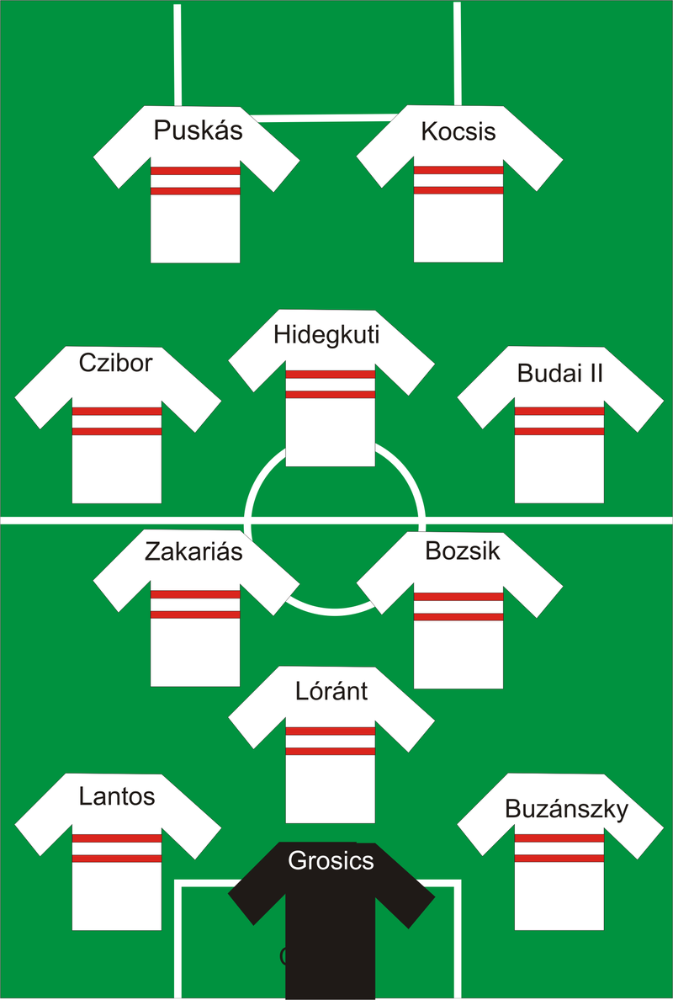
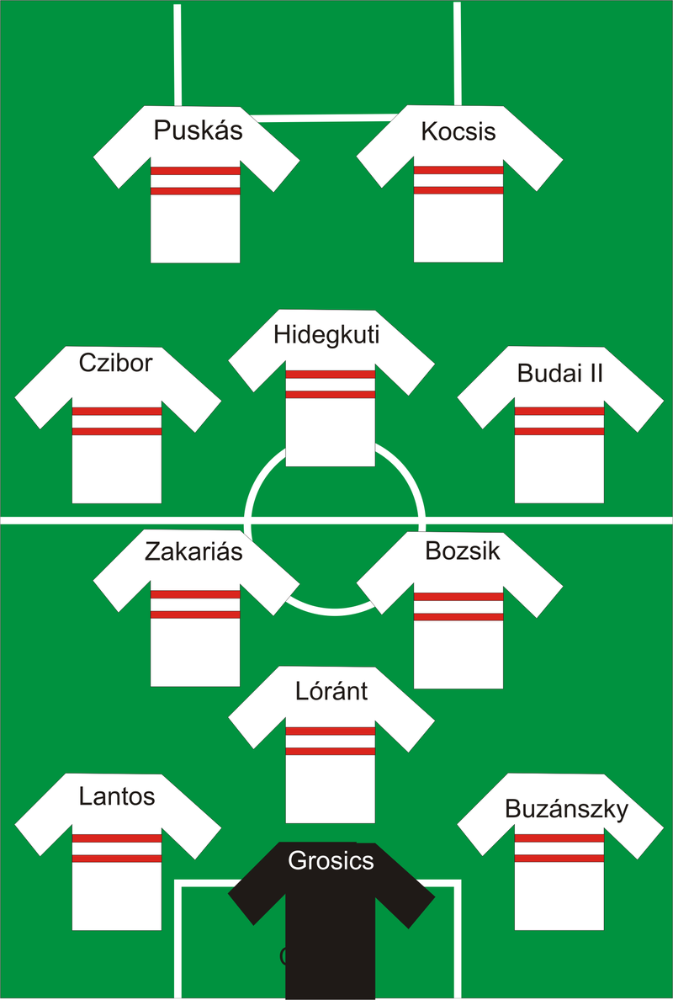

Az Aranycsapat (Golden Team, Mighty Magyars, Marvellous Magyars, Magnificent Magyars, Magical Magyars) minden idők legjobb magyar labdarúgó-válogatottjának díszítő jelzője és közismert neve. Ez a csapat az 1950-es évtől 1956-ig játszott együtt, de maga a tágabb korszak 1941 és 1960 közé esik.
vissza